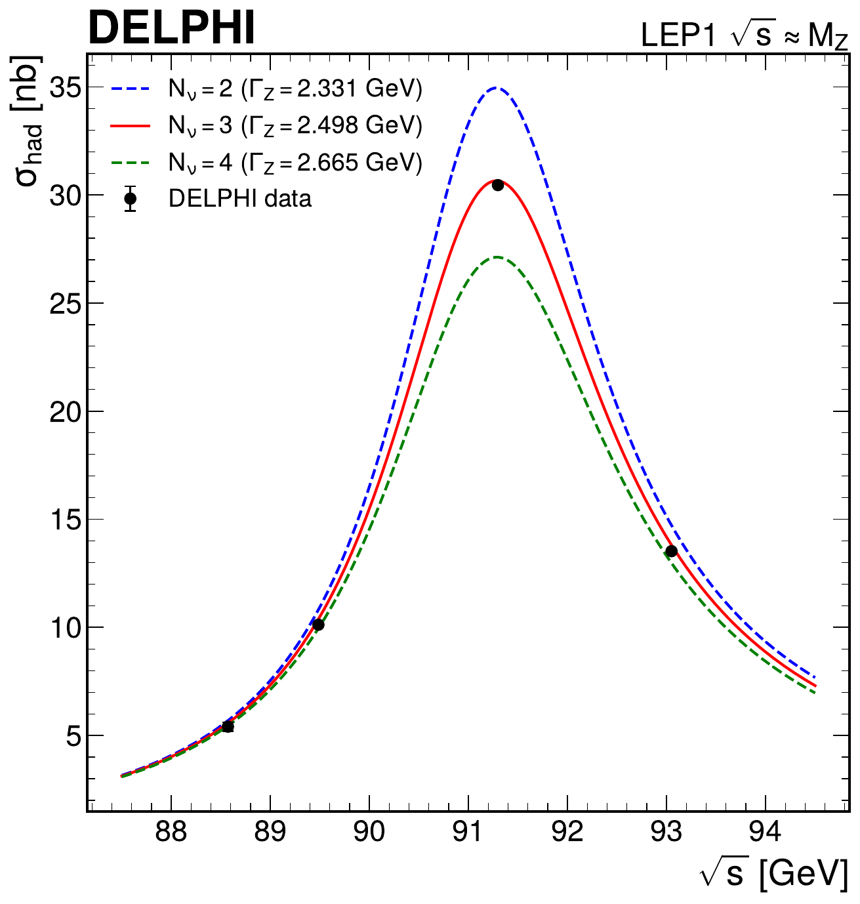
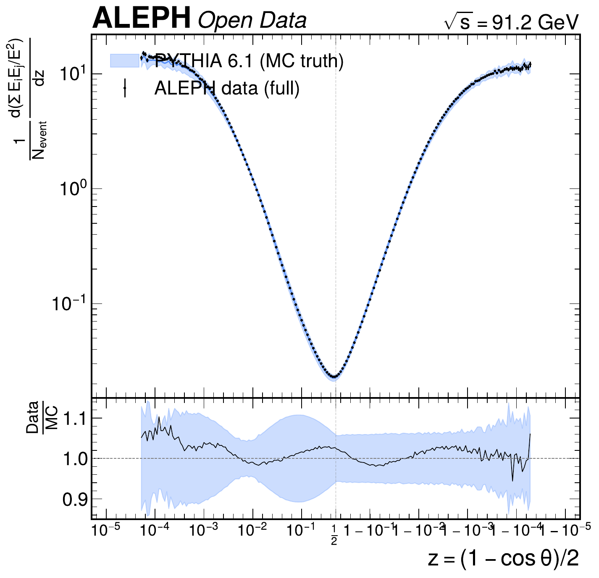
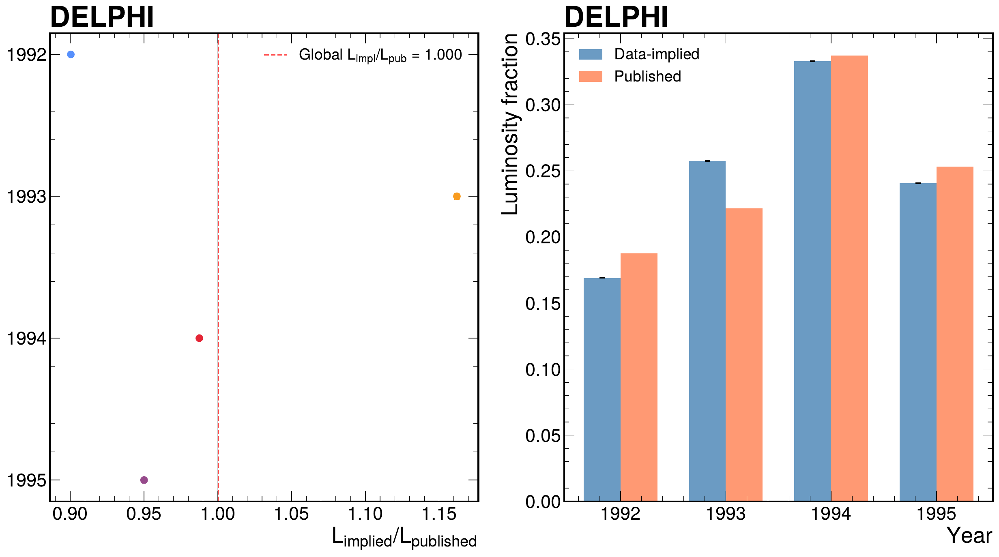
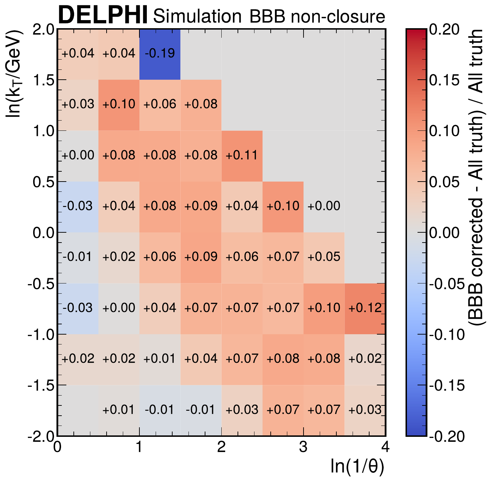
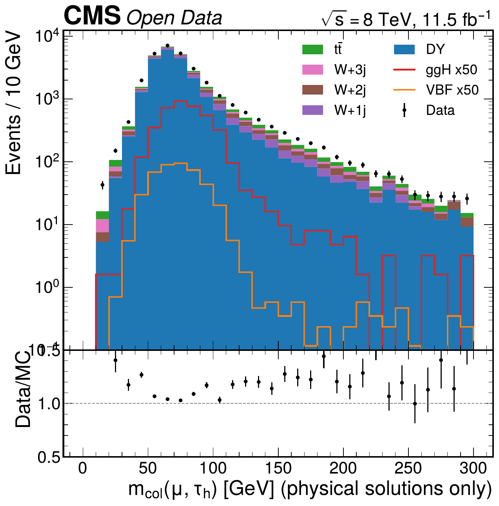

AI Agents Can Already Autonomously Perform Experimental High Energy Physics
2 NSF AI Institute for Artificial Intelligence and Fundamental Interactions
3 CERN
Large language model-based AI agents are now able to autonomously execute substantial portions of a high energy physics analysis pipeline with minimal expert-curated input. Given access to a HEP dataset, an execution framework, and a corpus of prior experimental literature, we find that Claude Code succeeds in automating all stages of a typical analysis.
ALEPH

Z-Boson Lineshape
Measure Z lineshape, thrust and extract $\alpha_s(M_Z)$ via NLO+NLL QCD fits.

Lund Jet Plane
Measure the primary Lund jet plane density in hadronic Z decays.

EEC Correlators
Measure the two-point energy-energy correlator in hadronic Z decays.

RB RC AFB
Measure $R_b$, $R_c$, and $A_\text{FB}^b$ using impact parameter b-tagging.
DELPHI

$N_\nu$ from $\Gamma_\text{inv}$
Measure the number of light neutrino generations from the Z invisible width.

Lund Jet Plane
Measure the primary Lund jet plane density in hadronic Z decays using DELPHI data.

Event Shapes & $\alpha_s$
Measure six event shape distributions and extract $\alpha_s(M_Z)$ from NLO QCD fits.

Jet Substructure
Measure groomed and ungroomed jet substructure observables in hadronic Z decays.
CMS

H → ττ
Measure the Higgs boson signal strength in the $\mu\tau_h$ final state at $\sqrt{s}=8$ TeV.